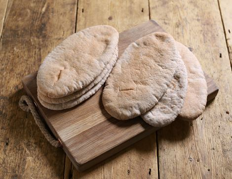

Pita Bread

Description
I like the use of bread maker in this recipe, it cuts the work in half.
The only thing I changed in this recipe was a way of baking the bread.
I cooked it in the teflon frying pan on the stove like a pancake, but without any butter or oil.
I rolled the bread into 4-5 mm thick circles and cooked each side for about 1 min or so until there were small lightly brown circles on both sides ,(heat knob turned half way).
They were 1000 times better then the ones u buy from the shops and whole family loved them.
Ingredients
- 1 ⅛ cups warm water (110 degrees F/45 degrees C)
- 3 cups all-purpose flour
- 1 teaspoon salt
- 1 tablespoon vegetable oil
- 1 ½ teaspoons white sugar
- 1 ½ teaspoons active dry yeast
Steps
- Place all ingredients in bread pan of your bread machine, select Dough setting and start. When dough has risen long enough, machine will beep.
-
Turn dough onto a lightly floured surface. Gently roll and stretch dough into a 12 inch rope. With a sharp knife, divide dough into 8 pieces.
Roll each into a smooth ball. With a rolling pin, roll each ball into a 6 to 7 inch circle.
Set aside on a lightly floured countertop. cover with a towel. Let pitas rise about 30 minutes until slightly puffy.
-
Preheat oven to 500 degrees F (260 degrees C). Place 2 or 3 pitas on a wire cake rack.
Place cake rack directly on oven rack. Bake pitas 4 to 5 minutes until puffed and tops begin to brown.
Remove from oven and immediately place pitas in a sealed brown paper bag or cover them with a damp kitchen towel until soft.
Once pitas a softened, either cut in half or split top edge for half or whole pitas. They can be stored in a plastic bag in the refrigerator for several days or in the freezer for 1 or 2 months.